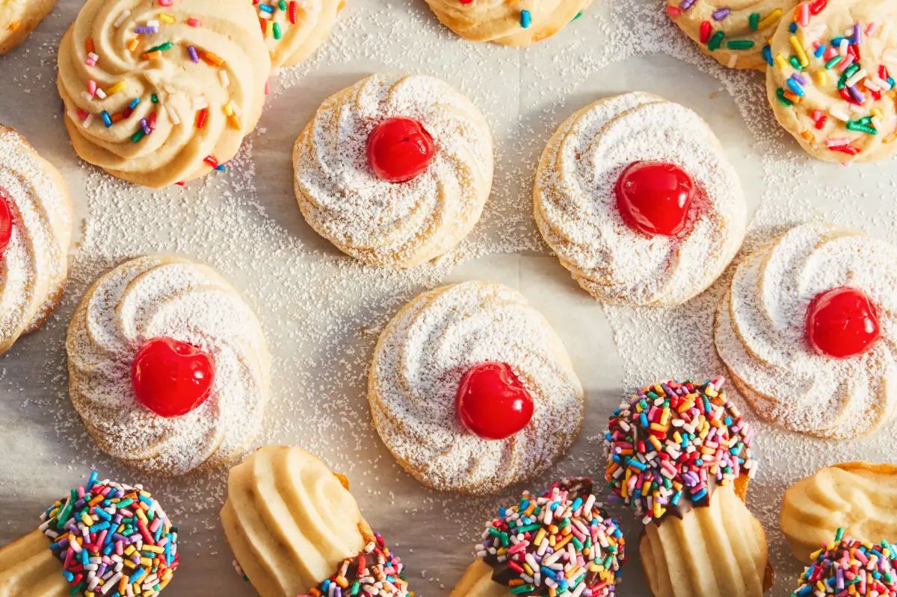

Butter Cookies
Also known as 'biscuit champagne' or Danish butter cookies, this is one of the easiest cookie recipes you'll find. Simple to make and ready to eat in under an hour! The best part about butter cookies is their suitability for numerous occasions—birthdays, Christmas, or just a simple tea time treat. You name it, they fit right in.
Preparation time
20 minutes
Cook time
12 minutes
Servings
10
Ingredients
| Quantity | Ingredients |
|---|---|
| 350g | All-purpose flour |
| 250g | Unsalted butter |
| 87g | Icing sugar |
| 2 tsp | Vanilla extract |
Instructions
- Preheat the oven at 170°C
- Whisk the butter in a large bowl for about 3 to 5 minutes until the texture becomes lighter.
- Add the icing sugar to the butter and whisk for another 2 minutes.
- Now, add the vanilla and whisk for an additional of 2 minutes.
- Then, gradually fold in the flour using a spatula. Mix until everything is well combined.
- Transfer the mixture into a piping bag and pipe your desired shape on a tray lined with baking paper.
- Bake in the oven for 10-12 minutes at 170°C; or until golden.
- Optional: You can also decorate the butter cookies with some jam or chocolate on top or some whipping cream in between.
The process in pictures
A little tip!
Store-bought icing sugar usually contains an anti-caking agent like cornstarch. If you run out or prefer not to use it, you can make your own! Simply grind granulated sugar in a blender until it becomes a fine powder. Voila, homemade icing sugar!
Tried this recipe? Share the outcome.